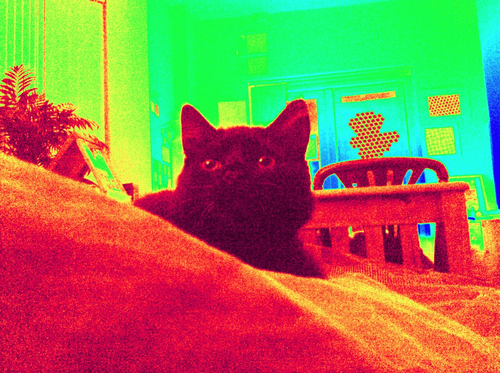
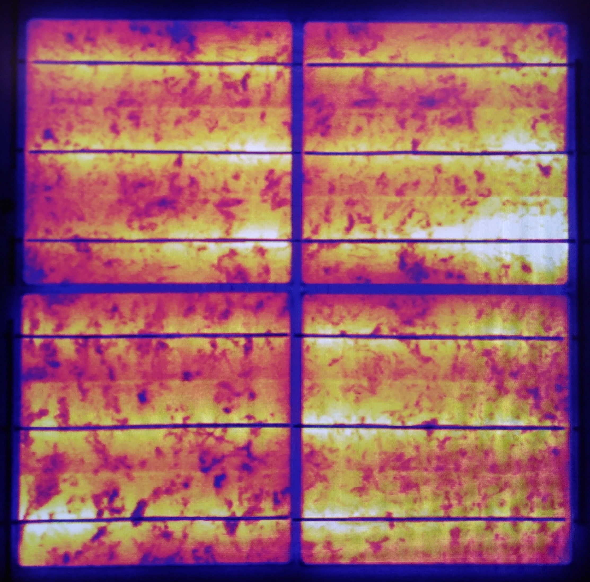
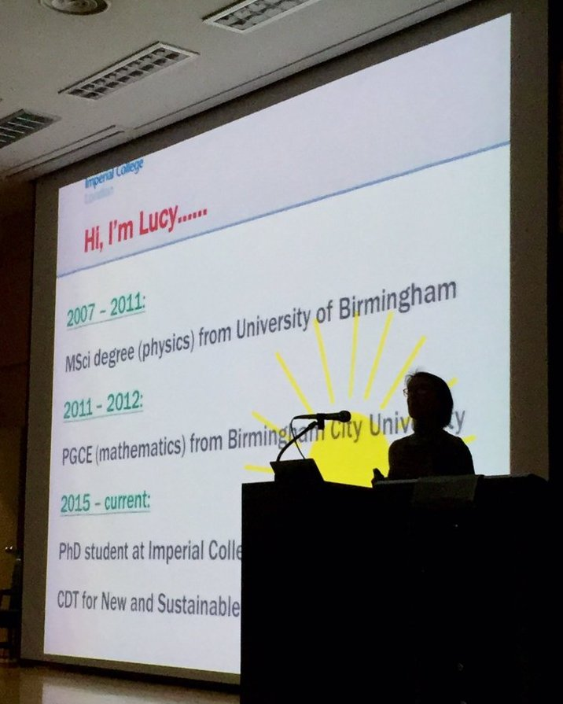

{{ partial "top.html" . }}
<a href="https://lucydot.github.io/blog/dotspace/">

</a>
<a href="https://lucydot.github.io/blog/miscellaneous/">

</a>
<a href="https://lucydot.github.io/blog/research/">

</a>
<a href="https://lucydot.github.io/blog/teaching/">

</a>
{{ template "_internal/disqus.html" . }}

{{ partial "bottom.html" . }}
